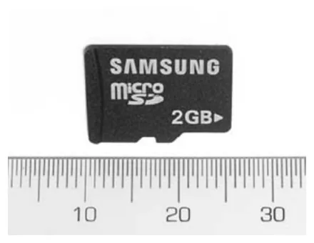
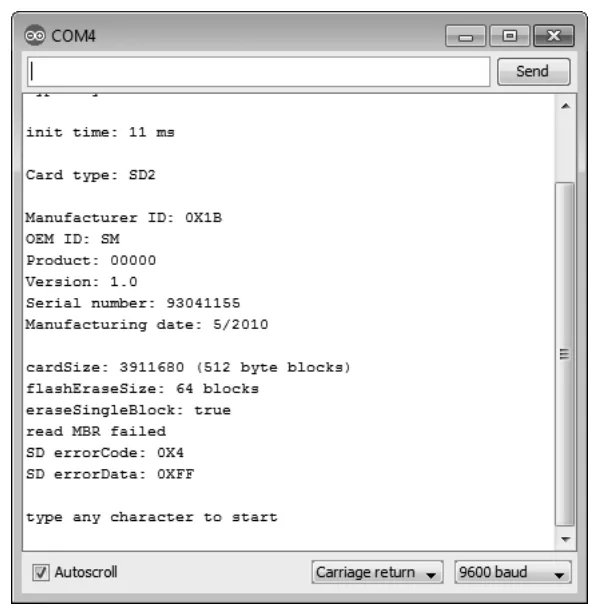

By using microSD cards with your Arduino, you can capture data from many sources, such as the TMP36 temperature sensor we used in Chapter 4. You can also use the microSD card to store web server data or any files for your project to use. To record and store the data you collect, you can use a microSD memory card shield like the one shown in Figure 8-23. This shield uses microSD (not microSDHC) cards with a capacity of up to 2GB.

Several memory card shields are available from popular retailers such as SparkFun, Adafruit Industries, and Snootlab. The shield used in this book (shown in Figure 8-3) is from SparkFun (part numbers DEV-09802 and PRT-10007).
Testing Your MicroSD Card
After you have finished formatting and assembling the microSD card shield, make sure that it’s working correctly. To do so, follow these steps:
- Connect the shield to your Arduino, and then insert the memory card and plug in the USB cable.
- Run the IDE by selecting File4Examples4SdFat4SdInfo. Then upload the SdInfo sketch that appeared in the IDE.
- Open the Serial Monitor window, set it to 9,600 baud, press any key on the keyboard, and then press enter. After a moment, you should see some data about the microSD card, as shown in Figure 8-24.

If the test results don’t appear in the Serial Monitor, then try the following until the problem is fixed:
- Remove the USB cable from your Arduino, and remove and reinsert the microSD card.
- Make sure that the header sockets are soldered neatly and that the pins are not shorted out.
- Check that the Serial Monitor baud rate is 9,600 and that a regular Arduino Uno–compatible board is being used. The Mega and some other board models have the SPI pins in different locations.
- Reformat your microSD card.